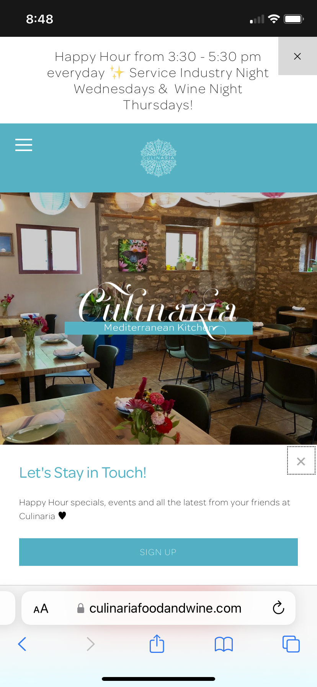

Contrast
Culinaria Mediterranean Kitchen
www.culinariafoodandwine.com
I choose this website because it is clear to see the contrast caused by the picture, anouncements, title, message etc. It is possible to see each thing in this picture.
Repetition
Youtube
www.youtube.comI choose this website because it is clear to see the repetition of the elements (videos and descriptions), when you scroll down the page, it is always the same pattern.
White Space and Clean Design
LinkdIn
www.linkedin.comI choose this website because it's possible to see a lot of white spaces and you can see each picture, text very clean, simple design attends this principle.